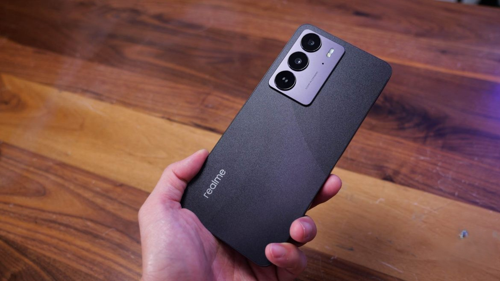
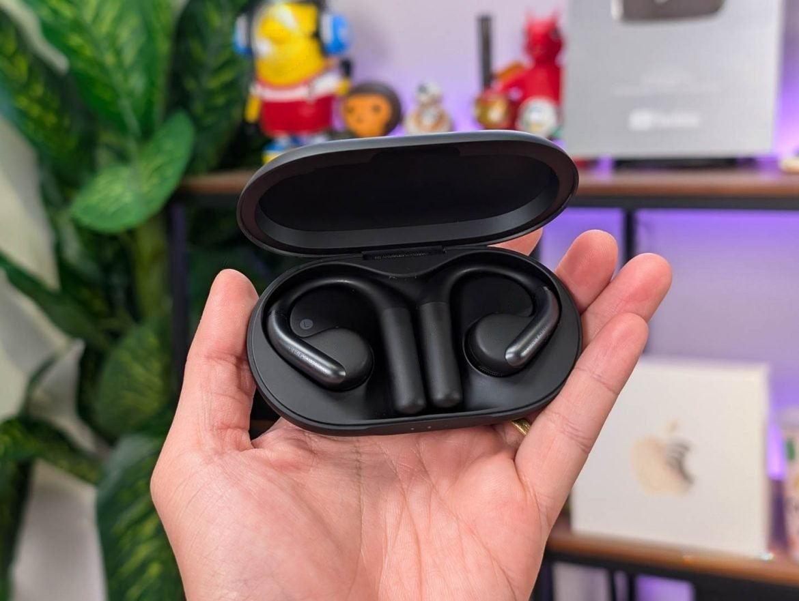
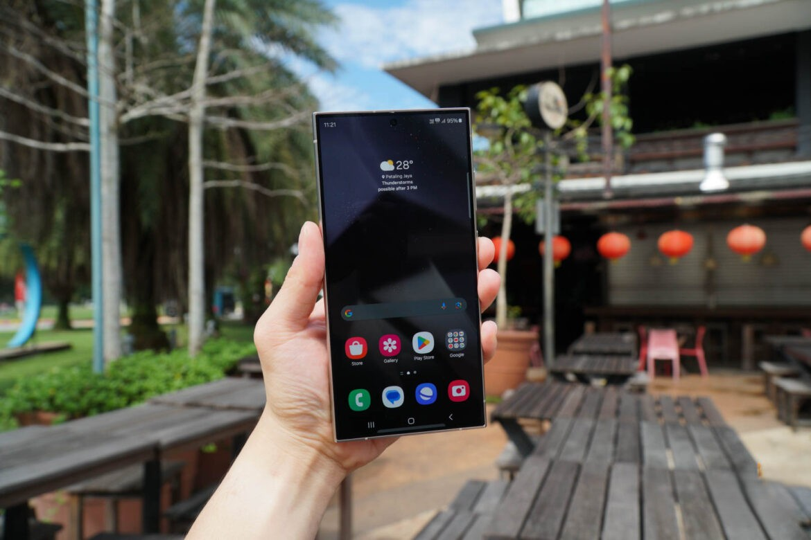

Review
Jason
If you are on the train or sitting in a cafe sipping a cup of coffee, try looking at people’s phones around you, you’ll be bound to see one that’s pretty beaten up or has a cracked screen, and these poor souls probably just don’t want to pay for a new phone because they are so expensive these days and just can’t afford to break another one. This is the very reason why aside from gimmicky AI features, many brands have begun to emphasize durability on their smartphones, with companies like Honor leading the pack with its X series phones, although the recent Honor X9c still isn’t affordable to many people, such as students or someone that’s just getting started in the workforce.
Warren
One of the annoying things about most open earbuds is that they can easily fall out of your ear and don’t deliver great audio quality as in-ear earbuds, but in-ears can cause discomfort the longer you wear them, which is why I recently turn to the soundcore AeroFit, an open-fit earbuds that I have been wearing for months now, it has become a staple whenever I need to indulge myself in some tunes while not needing people to shout at me in the office.
Amy
One of the reasons why people keep looking forward to a new iPhone every year is because of the ‘magical’ things that Apple announce on stage, but this time, I think Samsung finally has the better magic. Let’s face it, the past two Samsung Ultra flagships do feel a little settled, aside from camera and performance improvements and having the S Pen from the Note series, they look the same and the upgrades don’t justify for many to upgrade from the S21 Ultra. The Galaxy S24 Ultra may look the same as before, but it’s a whole new breed that comes with many exciting improvements a modern flagship really needs.
